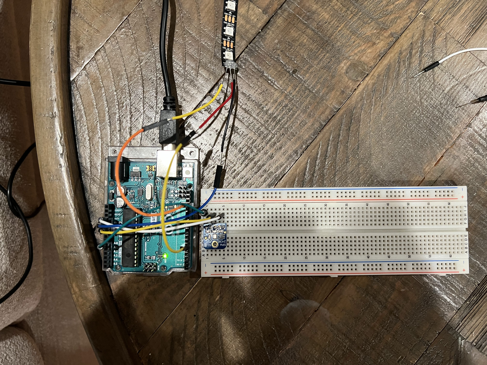
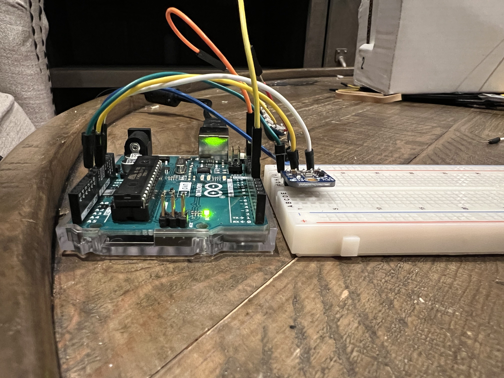
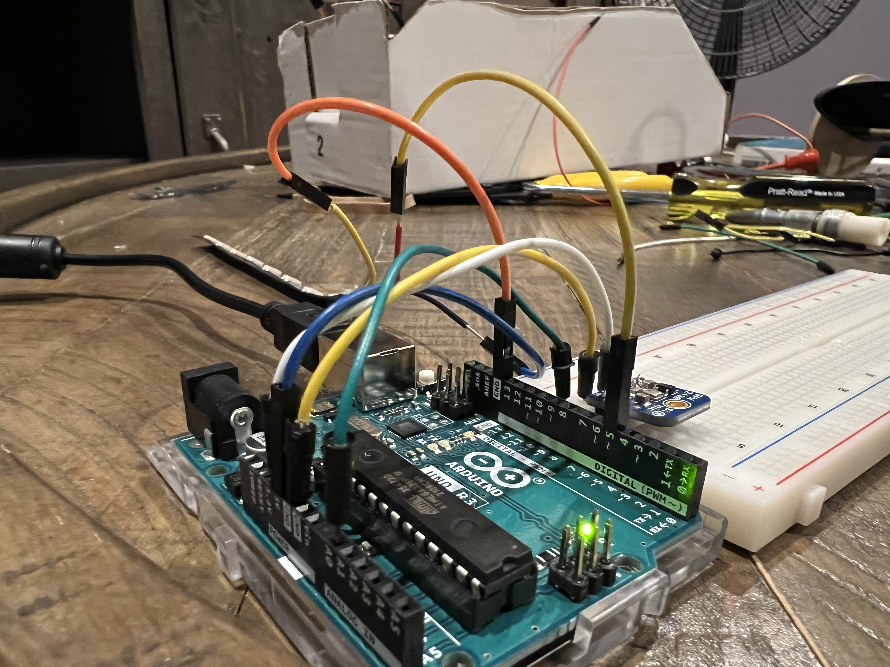
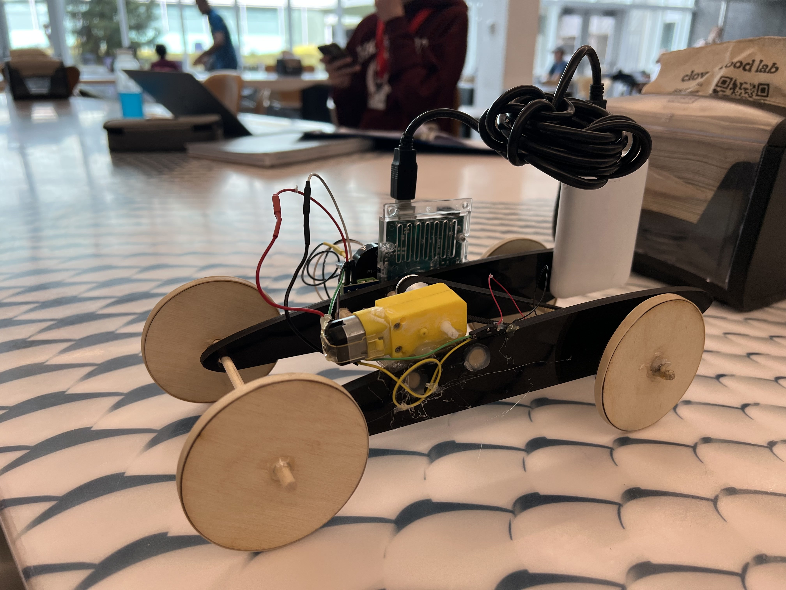
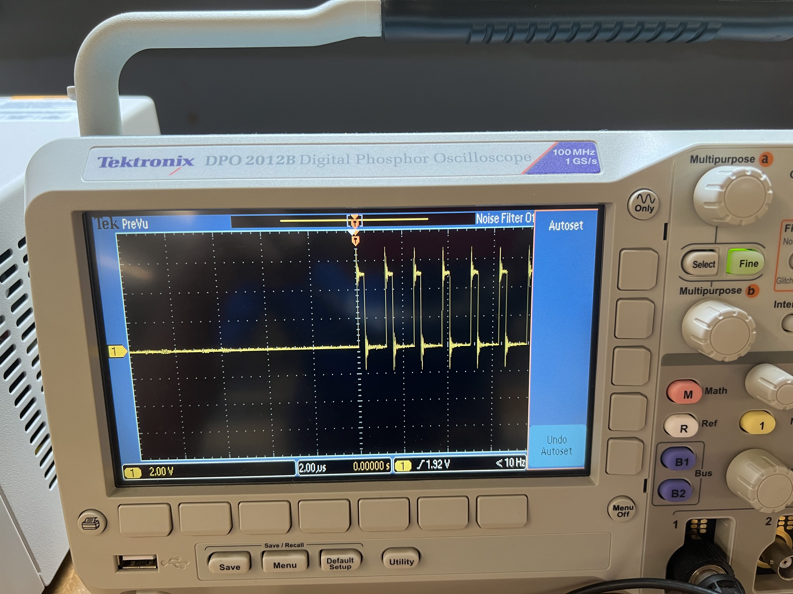
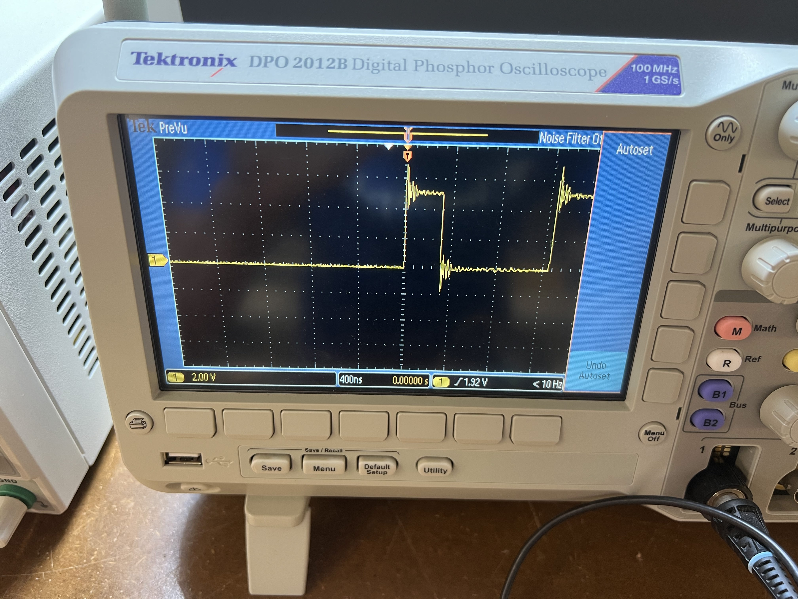

Mustafa Omran: Electronic Output Devices
<h5>For this week's assignment, students had to wrap up all the wonderful knowledge they have aquired over the last 3 units. We first started with programming a microcontroller which, personally, was very exciting because all my C/C++ projects were run in a terminal and it was nice seeing this knowledge being applied to real-life challenges. We then moved onto electronic input devices where we had to use any one of the available sensors to create an input using said sensors. Furthermore, we looked at different types of output devices like LED strips, speakers, etc. Fast forward to now, we are challenged to combine our previous knowledge to create a device that takes an electronic input and spits out an electronic output.</h5>
<h5>Starting with this unit, the class worked with servo motors which are very precise motors with high torque. I am mentioning this in my documentation because I was struggling to find a good solution for the turing of the wheels part of my final project and learning and testing servos made me find the right candidate for this solution.</h5>
<br><hr style="border-top: dotted 5px;"><br>
<h2><b>Input to Output Device</b></h2><br>
<h3>Video</h3>
<h5>Since I am building a car for my final project, a lighting system was nothing less than genius for this week's assignment. To start, I experimented with a single LED to make sure the circuit works.</h5>
<video controls width="650">
<source src="../images/ElectronicOutput/IMG_0064.mp4" type="video/mp4">
</video><br>
<br><h5>After a successful attempt, I then experimented with an LED strip. At first I was struggling but after Suvin's wise words of "Read the documentation and if you still don't understand I'll come and help you.", I followed the<a href="https://learn.adafruit.com/adafruit-neopixel-uberguide/arduino-library-use" style="color: #0645AD" target="_blank"> LED strip tutorial</a> which was far more simple and straight-forward than whatever Google brought me. Moral of the story? Always listen to Suvin and use the resources you already have instead of looking somewhere else. Anyway, after a couple of hours of trial and error, I ended up making a car lighting system with included turn signals and brake lights activated by my voice.</h5>
<br><h5>And Lights!</h5>
<video controls width="650">
<source src="../images/ElectronicOutput/My Movie 2.mp4" type="video/mp4">
</video>
<br><br><h3>Code</h3>
<h5>I tried using classes but failed to do so as I felt that there was no need to in this specific scenario. I did however, use a numerous amount of functions, loops, etc. to reduce the length and make my code much faster and more efficient than my <a style="color: #0645AD" href="oldCode.html" target="_blank">initial attempt</a> which was an absoloute disaster. There was one this I wanted to do; memory management. I looked up <a style="color: #0645AD" href="https://cplusplus.com/" target="_blank">C++ documentation</a> and <a style="color: #0645AD" href="https://docs.arduino.cc/learn/programming/memory-guide#optimizing-memory-usage-in-arduino-based-systems" target="_blank">Arduino's own guide to memory management</a> in order to achieve that goal.</h5>
<br><h5>During my quest, I learned a lot about the Arduino board's different memory modules.</h5><br><h5>First, we have Flash memory. When you open up arduino and upload a program to your board, it uploads it to the flash memory which activates whenever your arduino is on. Next, is the arduino's Random Access Memory or RAM module. Pretty self-explanatory, it's the same thing you have in your computer. It stores temporary data like variables created by functions that will be used by your microcontroller. Last but not least, Erasable Programmable Read-Only Memory or EEPROM. It is a type of Read-Only Memory that is slower than previously mentioned Flash memory. However, this lack of speed comes at a cost of better memory managment as it can be managed at the byte level instead of Flash's block level.</h5>
<pre><code class="languange-arduino">
#include <Adafruit_NeoPixel.h>
#include <EEPROM.h>
#include <avr/pgmspace.h>
#define LED_PIN 5 // Defines the pin where the LED is connected
#define LED_COUNT 7 // Defines the number of LEDs on the strip
Adafruit_NeoPixel strip(LED_COUNT, LED_PIN, NEO_GRB + NEO_KHZ800); // Initializes the LED strip
const PROGMEM int sampleWindow = 50; // Global Variables for the Microphone
unsigned int sample;
void setup() {
strip.begin(); // Signals to the LED strip to start by tuning off all the LEDs
strip.show(); // Applies previous command to LED strip
Serial.begin(9600); // Establishes a 9600 bit/second rate of transfer for microphone
}
void loop() {
for (int i = 0; i < EEPROM.length(); i++) { // Clears EEPROM memory
EEPROM.write(i, 0);
}
unsigned long startMillis= millis(); // 19-37 is for Microphone readings
unsigned int peakToPeak = 0;
unsigned int signalMax = 0;
unsigned int signalMin = 1024;
microphoneReadings(startMillis, peakToPeak, signalMax, signalMin);
if (peakToPeak >= 10) { // If Microphone detects a signal above 10, the LED strip turns on
strip.setPixelColor(3,255,255,255); // Initial white DRL with beginning animation
strip.show();
delay(75);
int *a = 4;
a = (int*) malloc(1);
int *b = 2;
b = (int*) malloc(1);
for (int i = 0; i < 3; i++) {
strip.setPixelColor(a,255,255,255);
strip.setPixelColor(b,255,255,255);
strip.show();
delay(75);
a += 1;
b -= 1;
}
free(a);
free(b);
delay(125);
full_LED(255,255,255);
delay(5000);
clearShow(); // Left and Right Turn Signals
turnSignal(0); // Right Turn Signal
turnSignal(1); // Left Turn Signal
full_LED(255,0,0); // Brake Lights
delay(5000);
brakeAnimation(); // Brake Lights with Ending Animation
full_LED(255,0,0);
brakeAnimation();
}
Serial.println(peakToPeak);
}
void brakeAnimation(void) {
int *c = 6;
c = (int*) malloc(1);
int *d = 0;
d = (int*) malloc(1);
for (int i = 0; i < 3; i++) {
strip.setPixelColor(c,0,0,0);
strip.setPixelColor(d,0,0,0);
strip.show();
delay(75);
c -= 1;
d += 1;
}
free(c);
free(d);
clearShow();
}
int microphoneReadings(long startMillis, int peakToPeak, int signalMax, int signalMin) {
while (millis() - startMillis < sampleWindow) {
sample = analogRead(0);
if (sample < 1024)
{
if (sample > signalMax) {
signalMax = sample;
} else if (sample < signalMin) {
signalMin = sample;
}
}
}
peakToPeak = signalMax - signalMin;
}
void full_LED(long color1, long color2,long color3) {
for (int j = 0; j < 7; j++) {
strip.setPixelColor(j,color1, color2, color3);
strip.show();
}
}
void clearShow(void) {
strip.clear();
strip.show();
}
void turnSignal(int left_right) {
if (left_right == 0) {
for (int i = 3; i < 7; i++) {
middleTurn();
strip.setPixelColor(i,255,255,0);
strip.show();
delay(100);
clearShow();
}
} else {
for (int j = 3; j > -1; j--) {
middleTurn();
strip.setPixelColor(j,255,255,0);
strip.show();
delay(100);
clearShow();
}
}
}
void middleTurn(void) {
strip.setPixelColor(3,0,0,0);
strip.show();
delay(100);
}
</code></pre>
<h5>"malloc" stands for memory allocation which is something I learned from the C++ documentation. "free" is pretty straight-forward as it frees the memory allocated to the variable passed as an argument. "*" are called pointers which are variables that store memory addresses. "EEPROM.write(i,0)" goes through every index of the arduino's EEPROM memory and sets it 0 effectivlely clearing all EEPROM data stored.</h5>
<br><h3>Circuit</h3>



<br><hr style="border-top: dotted 5px;"><br>
<h2><b>Other Device</b></h2><br>
<h5>Familiar? </h5>
<br><br>
<h5>During the <a href="microcontroller.html" style="color: #0645AD" target="_blank">Microcontroller Programming </a>unit, I made a car. This car took an input from a piezoelectric sensor attached to its side to sound a buzzer and activate a motor when it was triggered. Here's the circuit</h5>
<img src="../images/ElectronicOutput/Screenshot (77).png" width="500" alt="">
<br><hr style="border-top: dotted 5px;"><br>
<h2><b>Oscilloscope Measurments</b></h2>
<h5>An Oscilloscope is basically just a very fancy multimeter. They allow you to see electric signals like like frequency, noise, amplitude and much more as they vary over time.</h5>
<br><h5>At first, I had some issues with the Oscilloscope as it wasn't reading any measurments and was solely displaying a flat line. With the help of Prof. Melenbrink, we finally discovered that since my circuit was moving too fast thus rendering the readings unexistant to the naked eye. After some tweeking of the machine, we got this.</h5>


<h5>While there are minor outliers, we can clearly see the digital signals being sent to the circuit. This is called PWM and it happens because we can't send analog signals. We solve this by sending partial "on-off" signals to simulate the analog signal effect.</h5>
<br><hr style="border-top: dotted 5px;"><br>
<h2><b>CNC Preparation</b></h2>
<h5>For the Fusion 360 CAD model preparing us for next week's unit on CNC Milling, I wanted to make something that was both memorable and unique. Something that I would look at everyday and serve as a souvenir for when this Semester will be over. Here's what I came up with!</h5>
<img src="../images/ElectronicOutput/Screenshot (17).png" width="333" alt="">
<img src="../images/ElectronicOutput/Screenshot (18).png" width="333" alt="">
<img src="../images/ElectronicOutput/Screenshot (20).png" width="333" alt="">
<br><br><br>
<p style="text-align: right;">&copy; 2022 Mustafa Omran</p>